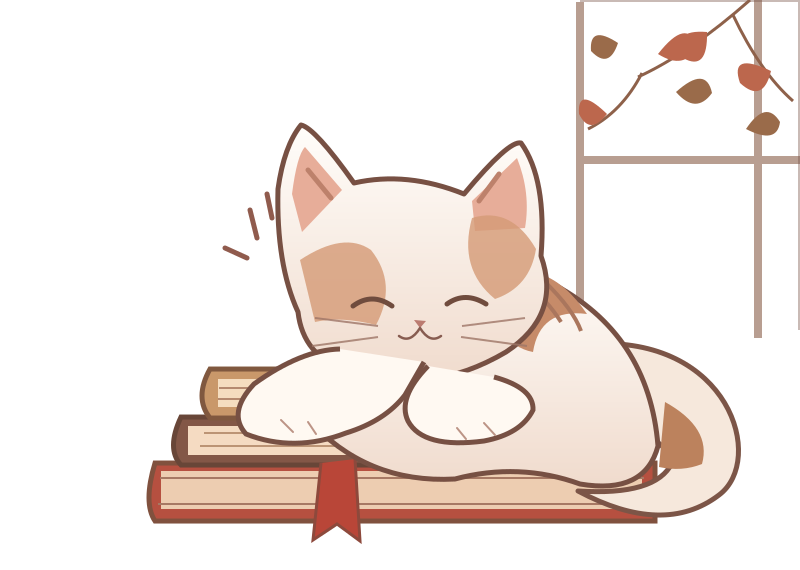

LEARNING
Hari Pertamaku Belajar Coding
Catatan kecil tentang bagaimana aku mulai belajar coding dan rencana ke depannya...
A PERSONAL SPACE
Ruang kecil untuk tulisan, pikiran,
dan hal-hal yang ingin kusimpan.

LEARNING
Catatan kecil tentang bagaimana aku mulai belajar coding dan rencana ke depannya...

SEDIKIT TENTANGKU
Aku sedang belajar membuat website dan menulis hal-hal yang ingin kuingat. Blog ini ruang kecil untuk mencoba, bercerita, dan bertumbuh pelan-pelan.